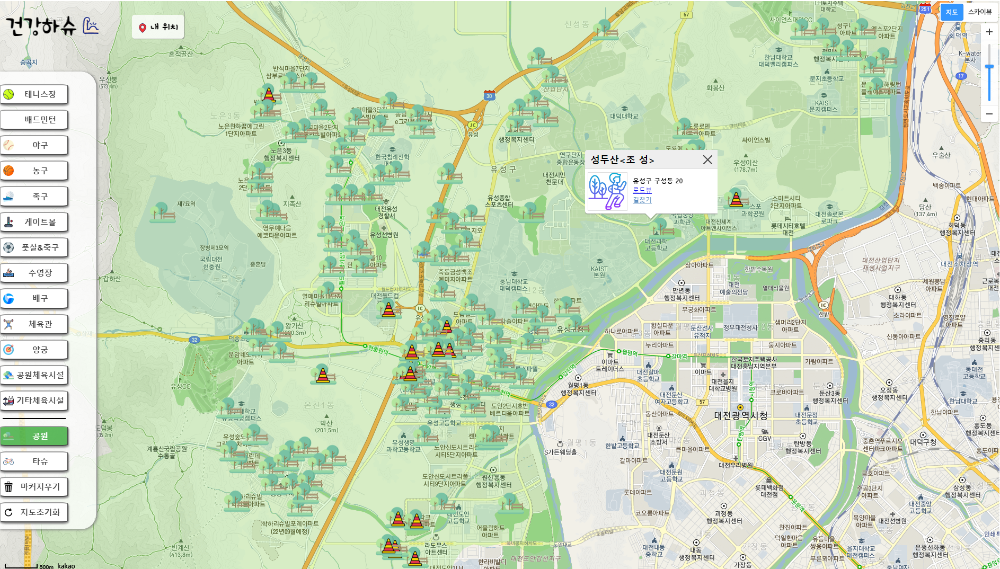

건강하슈
건강하슈는 대전시민을 대상으로 사용자 주변의 공공체육시설을 확인하고 이용함으로써 건강해졌으면 좋겠다는 의미에서 만든 프로젝트 입니다.
프로젝트는 6월 20일부터 7월 11일까지 22일간 진행했습니다.
기능은 크게 두 가지로 나뉩니다. 첫 번째는 공공체육시설을 보여주는 지도 서비스이고, 두 번째는 지도 데이터와 사용자 데이터를 관리하는 관리자 기능입니다.
팀은 총 3명으로, 모두가 프론트와 백엔드를 아울러서 작업했습니다. 그리고 저는 조장으로써 팀의 역할을 분배하고 서비스 전반적인 기능을 조직적으로 구현하기 위해 노력했습니다.
학원에서 7개월동안 배운 것을 바탕으로 기본적인 CRUD를 구현했고, 구글링을 통해 지도를 구현해 보았습니다.
프로젝트 관리는 Github와 Notion을 이용했고, AWS RDS와 EC2를 이용해서 배포했습니다.
이번 팀 프로젝트를 통해서 팀 사이 의사소통을 하는 게 정말 중요하고 그 방법도 적절해야 하며, 업무의 분배가 중요함을 느꼈습니다.
그리고 Java와 SpringBoot를 이용한 excel 데이터를 다루는 방법에서 여러 시행착오들(dependency 버전 맞추기, 많은 패키지와 클래스 해석, 엑셀 파일 오류 등)를 겪으면서 더 성장할 수 있는 계기가 되었습니다.
사이트는 여기에서 확인하실 수 있습니다.
사용자 계정
아이디 : 테스트
비밀번호 : 123
사용자와 지도를 관리하는 관리자 계정은 따로 있습니다.
깃허브에서 소스를 확인하실 수 있습니다.
Technologies:
- - Notion
- - MyBatis
- - Spring Boot
- - MySQL
- - AWS RDS
- - AWS EC2
- - JAVA
- - JavaScript
- - KAKAO Map API
- - Eclipse
- - QGIS
- - VSCode
- - Git
첫 페이지 화면
지도 페이지에 들어가기 전 서비스 소개, 공공시설 통계 등을 보여줍니다.

지도화면
대전시를 구별로 나눠서 폴리곤을 만들었습니다. 하나의 구를 선택하면 시설을 보여주는 폴리곤으로 이어집니다.

지도 위 마커
확인하고 싶은 시설을 왼쪽 메뉴에서 클릭하여 지도위에 나타낼 수 있습니다.
회원관리 페이지
관리자 계정으로 로그인 시 확인할 수 있는 페이지로 회원정보 등록, 수정, 삭제가 가능합니다. 회원 비밀번호는 암호화되어 있습니다.